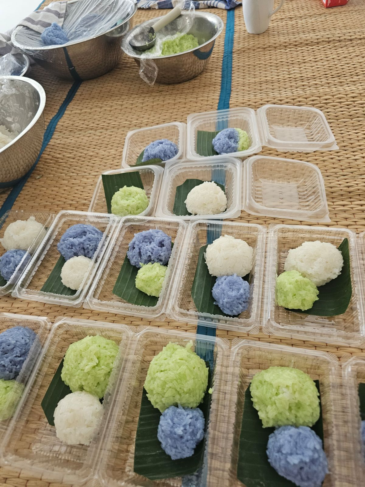
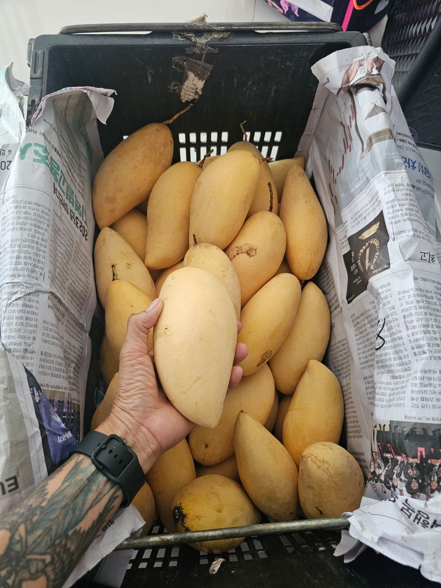

How We Make Mango Sticky Rice
Follow our traditional recipe perfected in Kuala Lumpur.
Step-by-Step Recipe
-
1. Soak the Rice
Rinse the glutinous rice thoroughly and soak it for at least four hours or overnight for the best texture.
-
2. Steam Until Tender
Drain and steam the rice in a bamboo steamer or rice cooker until the grains become tender and slightly translucent.
-
3. Make Coconut Sauce
Simmer rich coconut milk with sugar and a pinch of salt. This fragrant sauce gives the rice its signature flavor.
-

4. Combine and Rest
Gently fold the hot rice into the coconut sauce and let it rest so every grain absorbs the sweet creaminess.
-

5. Slice the Mangoes
Choose ripe, fragrant mangoes and slice them just before serving to maintain their natural sweetness.
-
6. Serve and Enjoy
Plate the sticky rice, top with coconut cream, and arrange mango slices on the side. Enjoy this classic Thai dessert!
Visit or Reach Us
We're a home-based Thai food business in the heart of Kuala Lumpur.
5 Jalan Stesen Sentral, Suasan Sentral Loft,Kuala Lumpur, 50470,
Malaysia
Phone: +60 12 923 0811